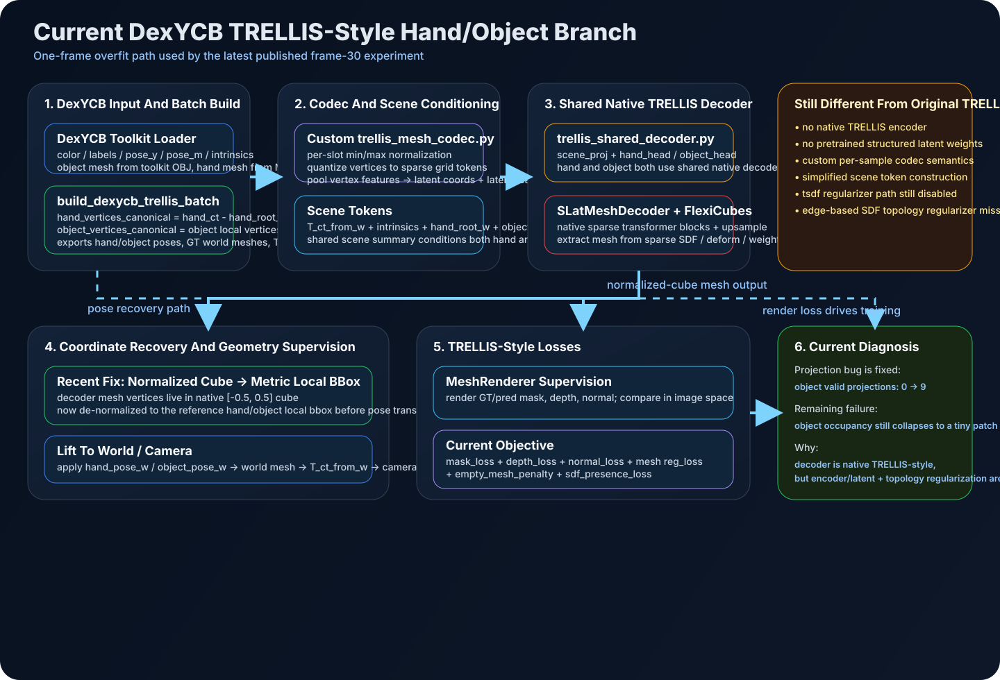

Overlay Compare
GT/pred overlays now use camera-depth ordering, so hand/object occlusion follows the actual depth relation instead of draw order.
This node separates two previously conflated failure modes. First, the native TRELLIS mesh decoder was emitting vertices in its internal normalized cube, but the pipeline treated them as metric hand/object local coordinates before pose transforms. Second, the overlay painter always drew object after hand, so the 2D view could visually invert occlusion. The current fix adds metric bbox de-normalization before pose lifting and uses camera-depth ordering in the overlay renderer.
projection_path_non_emptyprojection_path_non_empty
The diagram below summarizes the full published path used by this frame-30 experiment: DexYCB toolkit loading, custom sparse codec, shared native TRELLIS mesh decoder, normalized-cube to metric bbox recovery, and TRELLIS-style render losses. The orange panel marks the remaining gaps from original TRELLIS training.
The root cause of the "non-empty world mesh but completely off-image" object bug was not the camera projection
formula. The corrected diagnosis shows the object now has valid_projection_count = 9 with camera-space
bbox [365.53, 433.25, 367.11, 435.87]. That confirms the projection path is alive again. The residual
problem is now a different one: the object prediction remains too small and too bottom-right compared with GT,
which points to remaining shape/occupancy collapse rather than a coordinate-frame bug.
The current hand/object branch is now a TRELLIS-style mesh path rather than the earlier dense placeholder. The work completed so far is concentrated in four parts: toolkit-aligned DexYCB loading, a shared native TRELLIS mesh decoder, TRELLIS-style rendering losses, and diagnosis/visualization utilities that expose failure stages directly on one DexYCB frame.
dexycb_toolkit_bridge.pytrellis_mesh_branch.pySLatMeshDecoder shared by hand/objectmask + depth + normal + mesh reg
Concretely, stream3r/data/dexycb_toolkit_bridge.py loads DexYCB with toolkit semantics, builds hand
canonical coordinates by subtracting the camera-space hand root, keeps object vertices in object-local canonical
space, and exports hand_pose_w, object_pose_w, T_ct_from_w, intrinsics, GT world meshes,
and slot masks for a single frame. stream3r/models/trellis_mesh_branch.py then feeds those slots through a
lightweight custom codec in trellis_mesh_codec.py and a shared TRELLIS-native decoder in
trellis_shared_decoder.py, where both hand and object use the same SLatMeshDecoder / FlexiCubes mesh
extraction path.
On the supervision side, stream3r/loss/trellis_geometry.py renders predicted meshes with the native
MeshRenderer and trains with TRELLIS-style geometry terms: mask loss, depth loss, normal reconstruction loss,
and the mesh extractor's own regularization. To close the earlier zero-geometry-loss loophole, this branch also adds
empty_mesh_penalty and sdf_presence_loss. For debugging, the scripts
dexycb_trellis_overfit.py, visualize_dexycb_trellis_overfit.py, and
dexycb_trellis_diagnose.py now run one-frame overfit, export overlay/world visualizations, and label each
failure as raw-mesh, world-lift, world-to-camera, or camera-to-image.
The most recent fix in this node is also part of that branch summary: decoder outputs were originally still in the native normalized cube, so this page's experiment adds metric bbox de-normalization before applying hand/object pose transforms. Overlay rendering was also changed to camera-depth ordering so the 2D hand/object occlusion follows actual depth instead of painter order.
This is not yet a strict reproduction of TRELLIS training. The branch already uses the native mesh decoder and
FlexiCubes extraction, but it does not yet use a native TRELLIS encoder, native pretrained weights, or the full
original structured latent training distribution. The current trellis_mesh_codec.py is a lightweight custom
sparse codec that quantizes each slot independently with per-sample min/max normalization and pooled vertex
features, while scene conditioning is still a simplified token pack built from camera transforms, intrinsics, and
coarse hand/object anchors.
There is another important gap: the branch currently uses TRELLIS-style render supervision and FlexiCubes regularization,
but it still does not include the stronger edge-based SDF regularization used in FlexiCubes optimization examples, and the
internal tsdf regularizer path remains disabled in trellis_geometry.py. That means the current branch
is TRELLIS-like in decoder/loss structure, but not yet equivalent to the full native TRELLIS mesh training recipe.
Combining the current experiment with the TRELLIS/FlexiCubes code path gives a consistent diagnosis: the earlier "object projects nowhere" bug was caused by coordinate misuse and is now fixed, but the remaining small object mesh is a training-collapse issue. The likely root causes are the mismatch between our custom codec's latent semantics and the native decoder's expected structured latent space, plus missing strong SDF/topology regularization. In other words, the branch now uses the right decoder family, but the front half of the training path is still too weak to reliably keep the object occupancy field from shrinking into a tiny surviving patch.
GT/pred overlays now use camera-depth ordering, so hand/object occlusion follows the actual depth relation instead of draw order.

The object prediction is no longer fully outside the image. The remaining miss is a small projected cluster rather than zero valid pixels.

Hand prediction now aligns closely in world space. Object prediction stays non-empty but still collapses into a much smaller occupied region.